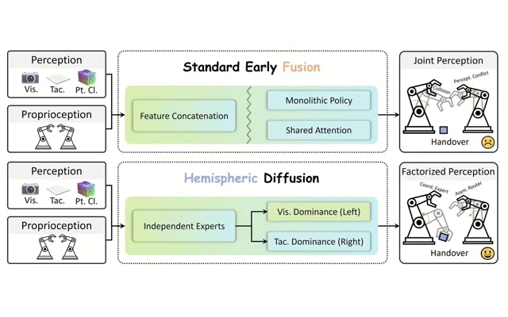
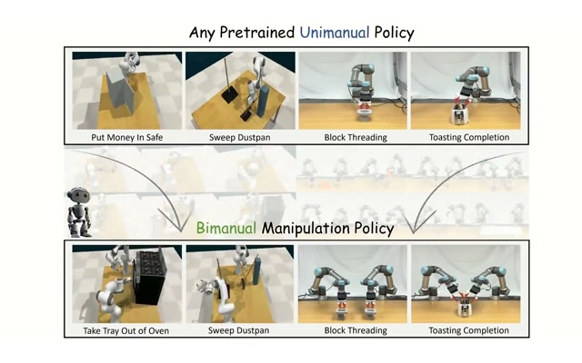
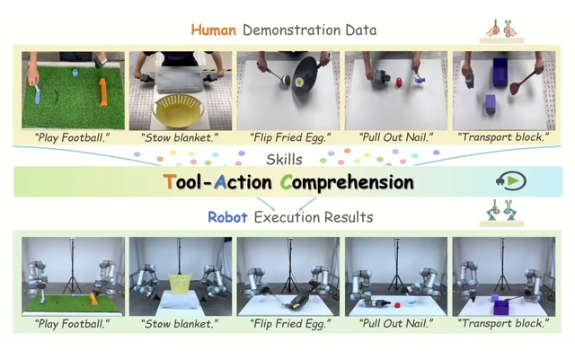
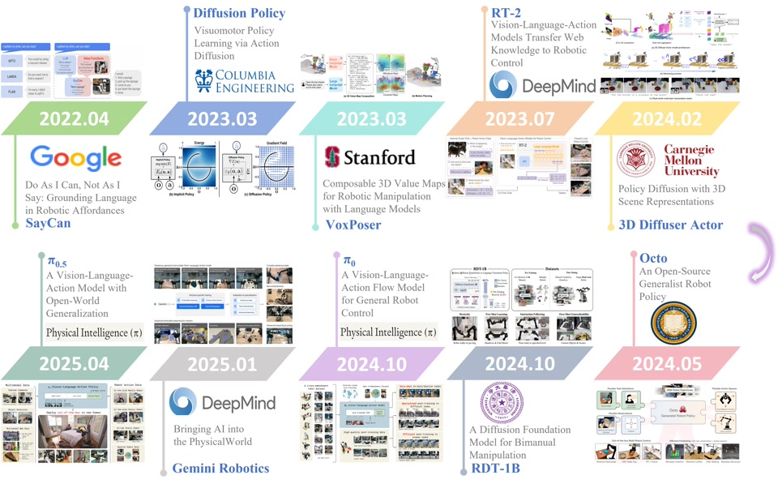
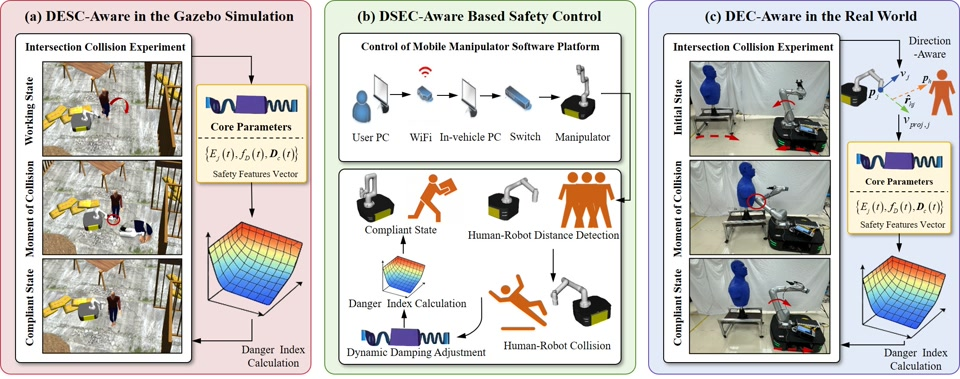
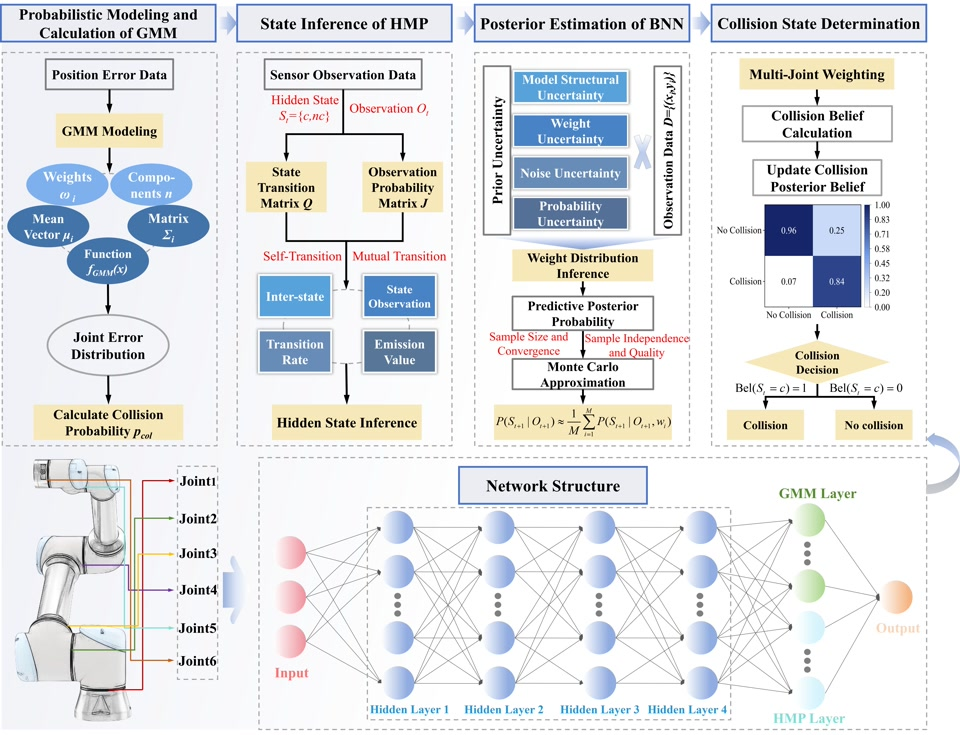
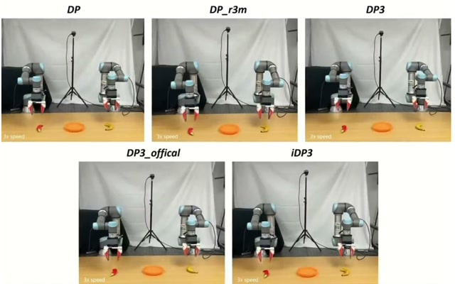
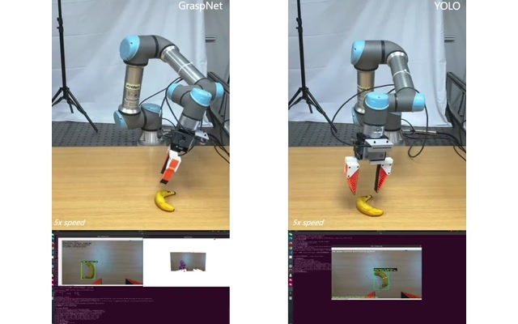
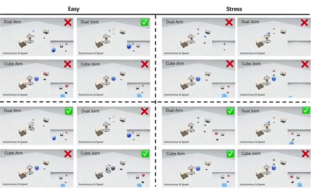

Hemispheric Diffusion: A Compositional Generative Policy for Coordinated Bimanual Manipulation
Yechen Fan, Jinhua Ye, Xianyou Ji, Chenyang Song, Haibin Wu, Gengfeng Zheng and Jiafu WanUnder Review
project page paper video code

I am a master's student in Mechanical Engineering at Fuzhou University, and I expect to graduate in June 2027. My research is conducted at the Fujian Provincial Key Laboratory of Special Intelligent Equipment Safety Measurement and Control, where I am advised by Associate Professor Jinhua Ye and Lab Director Gengfeng Zheng.
I also collaborate with Professor Haibin Wu at Fuzhou University and Associate Professor Huixin He at Huaqiao University. I received my bachelor's degree in Mechanical Design, Manufacturing and Automation in June 2024.
Research Interest: Robot learning for manipulation, with a particular interest in multimodal imitation learning, bimanual manipulation, and real-world robot deployment.
I am working toward becoming a full-stack robotics engineer.






A LeRobot-based UR5e deployment framework that inherits LeRobot policy pipelines and extends them to real-world single-arm and bimanual robot learning, supporting SpaceMouse, Quest 3 VR, Gello, and keyboard teleoperation.
code
A real-world UR5e deployment framework for DP, DP-R3M, DP3, DP3-Official, and iDP3, covering both 2D image-based and 3D point-cloud-based policies for single-arm and bimanual manipulation.
code
A complete UR5e RGB-D grasping system that integrates YOLO/OBB and GraspNet-based grasp estimation for autonomous tabletop object grasping.
code
Safe mobile bimanual manipulation with flow matching policy and predictive whole-body control barrier functions.
code